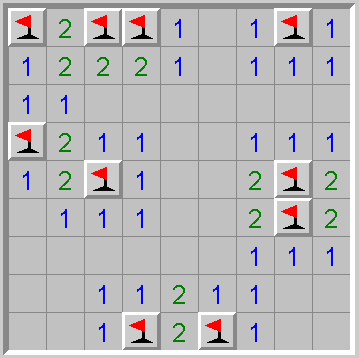
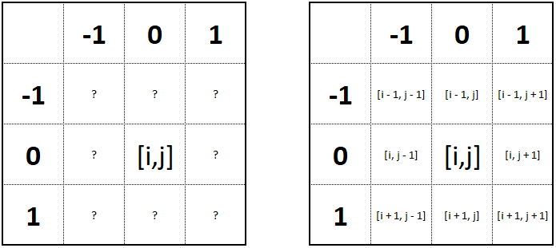
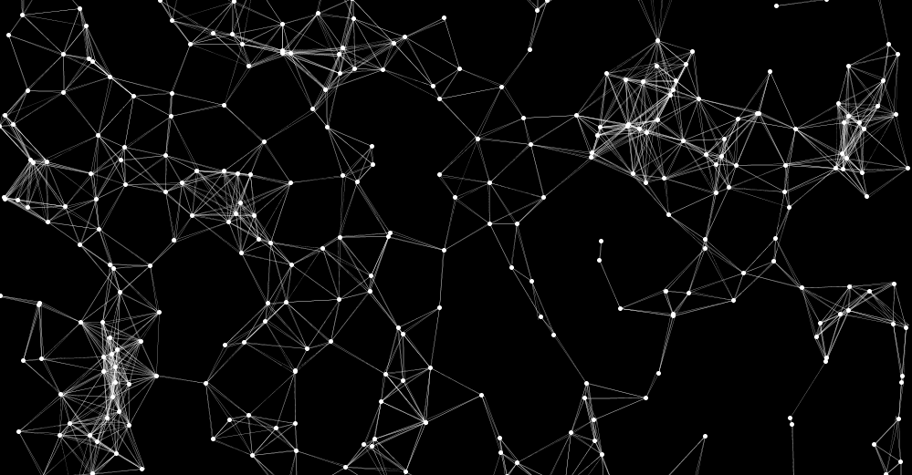

Buscaminas
El clásico juego del buscaminas en el que el usuario debe encontrar todas las minas del tablero, sin fallar en alguna y en el menor tiempo posible. Este juego consta de un tablero en el que hay números los cuales le van ayudando al usuario informándole cuantas minas hay alrededor de dicha celda, tal como se aprecia en la siguiente imagen:
Se quiere a partir de un tablero en el que solo tenemos las minas en distintas posiciones, generar el tablero correspondiente que informa cuantas minas hay alrededor de cada celda.
- Cada celda ubicada en una esquina tiene 3 vecinas
- Cada celda ubicada en un borde tiene 5 vecinas
- Cada celda ubicada en el interior del tablero tiene 8 vecinas
- El número correspondiente a cada celda es el total de minas que hay en sus celdas vecinas
-
Si a una posición arbitraria se tiene en cuenta una forma particular de acceder a sus vecinas, contar puede que sea más fácil.

- Recorrido de matrices
- Conteo de vecinos
- Condiciones de entorno
- Pensamiento analítico
- Abstracción de condiciones
Fomentar en el estudiante el uso de sentencias condicionales y repetitivas para dar solución a un problema sencillo que involucra recorridos de matrices y conteos.
Descargar ejercicio Descargar enunciado completoComo solución a este problema, lo primero es abstraer los pasos que se deberían hacer para resolver el problema, entre estos están:
- Recorrer la matriz inicial dada
- Para cada posición de la matriz contar entre sus vecinos cuántos de ellos tienen mina
- Asignar el conteo
Una vez identificado esto, se procede a desarrollar cada paso, sobre todo el paso número 2, ya que este se puede hacer de varias maneras, ya sea una condicional para posición de los vecinos y preguntando si ese vecino existe en caso de que sea un borde o una esquina.
Descargar soluciónParticulas en el espacio
El vecindario de un elemento se podría definir como los elementos que están a una distancia ‘d’ de este, para un conjunto de puntos aleatorios en el espacio, una forma de representar el vecindario de cada punto, seria trazar una línea entre los puntos que se consideran en el mismo vecindario.
Para este ejercicio se tendrán un conjunto de puntos en el espacio que cada uno se estará desplazando con una velocidad aleatoria en una dirección aleatoria. La idea es representar el vecindario de cada punto mientras se mueven, al moverse lo único que cambia es que el vecindario es variable, pero la definición es la misma.
- Para cada elemento se debería verificar cuales de todos los demás puntos pertenecen al vecindario
- La verificación debería hacerse en cada vez que se actualice la vista.
- Puntos en el espacio
- Vectores de velocidad
- Vecindario de un elemento
- Grafos
- Abstracción del problema
- Ciclos anidados
Fomentar en el estudiante el uso de estructuras de datos, y condicionales para crear un entorno en base a casos o eventos únicos.
Descargar ejercicio Descargar enunciado completoComo solución a este problema, lo primero es abstraer los pasos que se deberían hacer para resolver el problema, entre estos están:
- Recorrer lo puntos, y para cada punto recorrerlos nuevamente para comparar cada posible pareja.
- Si la pareja están en un mismo vecindario pintar una recta que los una, de lo contrario no.